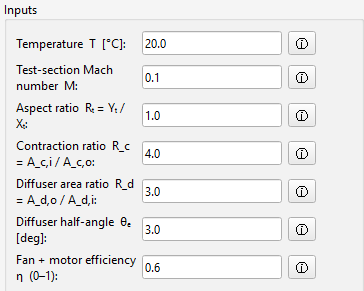
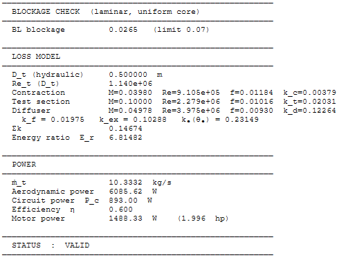

Overview
EasyTunnel is a preliminary sizing calculator for low-speed open-circuit wind tunnels. It is intended for study, early feasibility work, and quick design iteration.
The calculator starts from the test section because that is where the useful flow condition is defined. From the test-section size and target speed, the tool estimates section velocities, Reynolds number, pressure losses, and approximate power requirement.
The method follows the low-speed wind tunnel design approach set out in Low-Speed Wind Tunnel Testing by Barlow, Rae and Pope, adapted into a transparent study tool.
Tool status
The updated EasyTunnel calculator is still being prepared for distribution. For now, this page records the purpose, method, inputs, outputs, and assumptions behind the tool.
Why I made it
Early wind tunnel sizing can become awkward because the important quantities are coupled. Test-section speed affects dynamic pressure. Area ratios change local velocity. Section losses affect pressure drop, and pressure drop affects the motor power estimate.
EasyTunnel keeps these relationships in one place. The goal is not to hide the method, but to make the sizing logic visible enough that the user can see why the result changes.
Method summary
Reference test section
The test section is used as the reference section because it is where the target operating condition matters most. Local quantities are related back to the test-section area and speed.
Area-ratio scaling
For a preliminary low-speed calculation, continuity links area and velocity. A smaller area gives a larger velocity, while a larger area gives a smaller velocity.
Pressure loss and power
Each section is assigned an approximate loss coefficient. These losses are accumulated into a total pressure-drop estimate, which is then combined with volume flow rate to estimate power.
Inputs
- Target test-section velocity or Mach number
- Test-section width, height, and area
- Contraction area ratio
- Diffuser geometry and area ratio
- Air density and viscosity assumptions
- Approximate loss-coefficient assumptions

Outputs
- Estimated local section velocities
- Reynolds number estimate
- Dynamic pressure estimate
- Section and total pressure-loss estimates
- Approximate fan or motor power requirement

Limitations
EasyTunnel is an order-of-magnitude sizing tool. It does not replace detailed wind tunnel design, fan selection, acoustic treatment, flow-quality assessment, structural design, or experimental validation.
The outputs should be treated as early design estimates, not final design values.